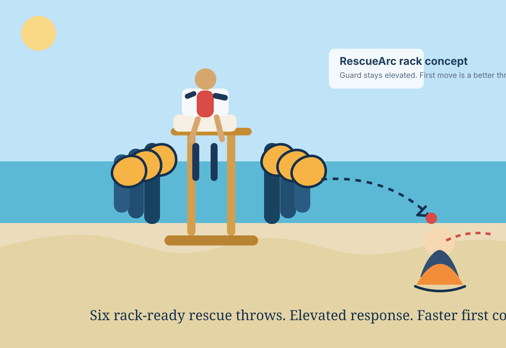
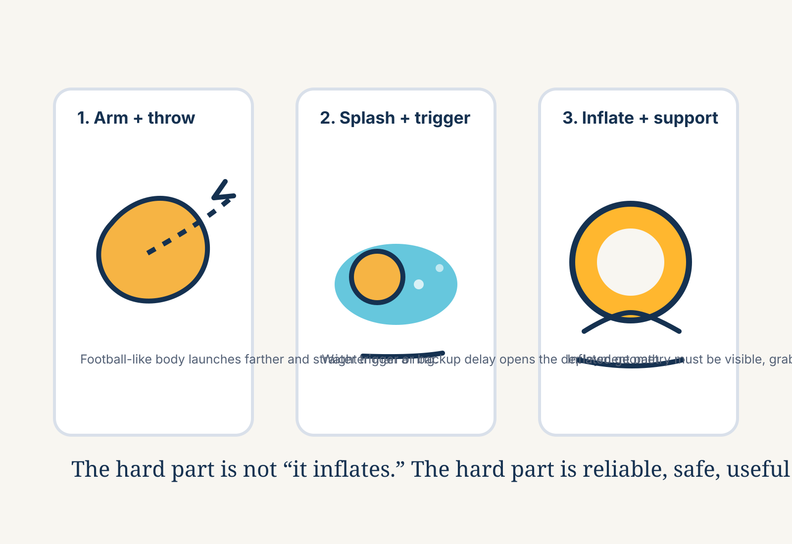
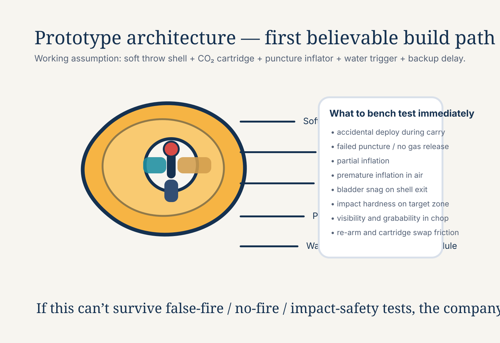

{kind=link}
Phase 1
Invention definition
- Write the invention disclosure.
- Define 3 to 5 embodiments.
- Freeze the exact rescue moment and buyer story.
Concept-stage rescue hardware
RescueArc is a football-like throwable flotation concept built around a brutal question: why are rescuers still launching ring buoys that are awkward to throw, slow to reach, and easy to miss?


The problem
Traditional throwable flotation is mature and regulation-friendly, but it is aerodynamically weak, accuracy-poor, and hard for average people to launch far under stress. That gap matters when every second of reach time counts.
Current category pain
Ring buoys are awkward. Throw bags require line handling and victim grip. Powered rescue devices are expensive. Compact inflatable rescue devices exist nearby, but none own the story of better throw mechanics for ordinary humans.
Proposed wedge
RescueArc reframes the category around launch performance first: football-like grip, cleaner spiral path, more attempts in a rack, then fast visible flotation after splash.
Hero scenario
Why this markets well
“Don’t make the first rescue move a long swim. Make it a better throw.”
This is the billion-dollar version of the story: not just a gadget, but a new standard rescue surface at every guarded water edge — beach stands, pool decks, docks, patrol boats, marinas, and waterfront homes.
Concept schematic

Patent and IP reality
Closest prior art likely already covers parts of throwable inflatable flotation. The defensible claim area is narrower: superior throw form factor, safe deployment sequence, self-orienting flotation geometry, rackable rescue workflow, and measured human throw-performance gains over ring buoys.
The right sequence is still: prior art first, invention disclosure second, prototype architecture third, then any funding language.
Full roadmap
This page is the concept weapon. The company only gets real when the proof stack gets built in order.
Phase 1
Phase 2
Phase 3
Phase 4
Phase 5
Phase 6
What wins the room
The pitch is that 100 people can throw this farther and more accurately than a ring buoy, and the rescue target gets flotation faster because the first move is a better projectile.
No-BS risk list
Current status
This site is intentionally honest. It is a public concept artifact, an invention-story surface, and a commercialization roadmap. It is not a preorder page, not a certification claim, and not proof that the engineering risk is solved.